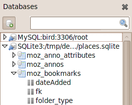

Database Explorer Komodo IDE only
The Database Explorer is a tool for examining the structure and content of databases. By default, it can connect to SQLite and Oracle databases, but support for additional database types such as MySQL is available through extensions.
The Database sidebar displays a filterable list of database connections. Each connection offers a tree view of databases available via that connection, the tables in each database, and the fields/columns in each table.
Adding a Database Connection
Click on the Databases tab to open the Databases sidebar in the left pane. Use the Add a Database Connection button to configure a connection. Select a Database Type and configure the required connection information or the path to the file.
Click Add to create the connection and open the database view in the sidebar.
Each database appears as an top-level node in the sidebar. Clicking on the arrow next to the database expands a tree showing all tables. Table names also expand to show the contained field names.
Examining Tables
Double-click on a table name in the sidebar to open the Database Explorer dialog. The dialog box displays:
- Full Table: a spreadsheet-like view of the selected table, showing all fields. The table can be sorted by any column. Columns can be hidden or displayed via the column selection button at the right side of the title row.
- Query: a Query field for composing SQL queries (for any table) and an Output pane similar to the Full Table view to show the query results. Click Run to execute the contents of the Query field. The Refresh button is for refreshing the query output display. It re-runs the last successful query, not the current contents of the Query editing buffer above.
- Schema: displays the Schema for the selected table including the field id, name and type as well as whether it is nullable. Indicates the default value (if any) and shows which is the primary key.